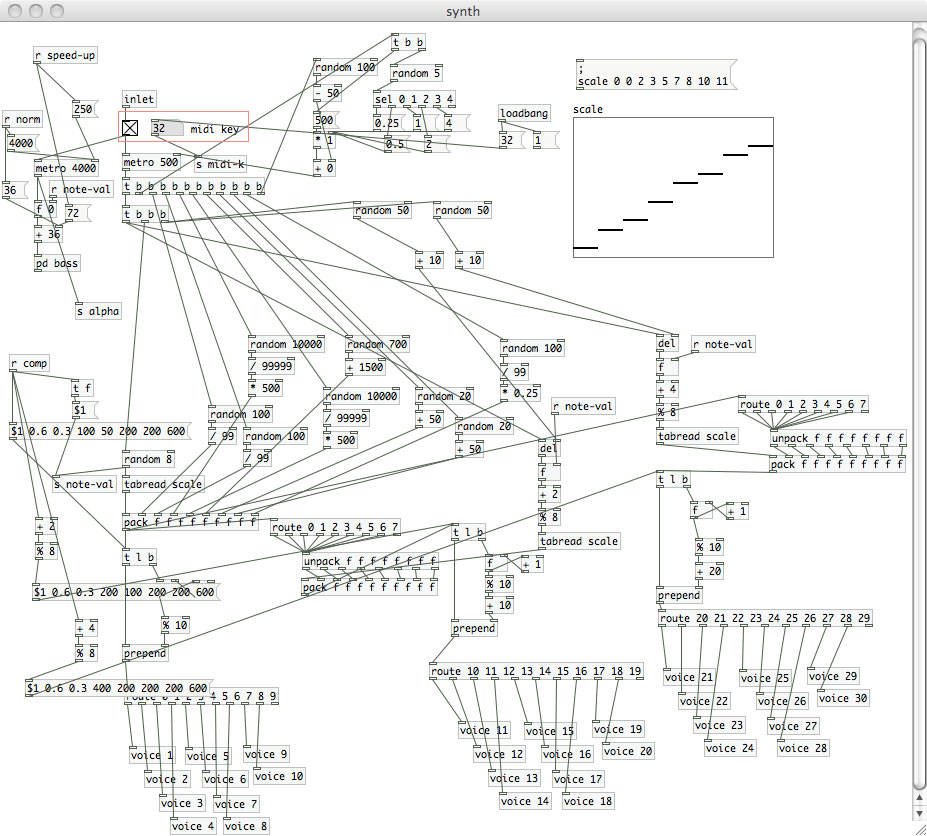
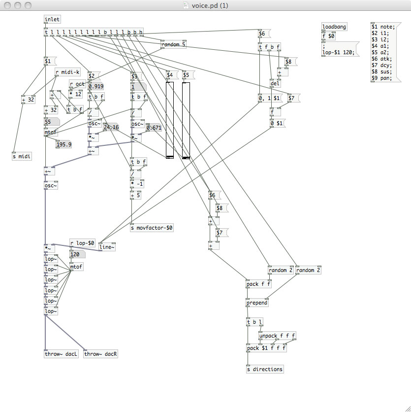

Smoke2
Fog machine + projector
Smoke2 takes fog and light, and melds them into a visual medium for a beautiful and dynamic presentation. I utilized simple double index frequency modulation for the sound to push the focus onto the visual side. Unfortunately, no recording of the actual projection into the smoke could be obtained, but the video being projected into the smoke is still shown below, along with some pictures of the patch itself. This patch was created using Pure Data, along with its visual counterpart, Gem.
The concept behind the piece lies in the foundation of "visual art." This idea applies musical ideas (namely consonance and dissonance) to visual properties that create a sort of "music for the eyes" behind the aural plane that allows for a build of tension and a resolution. Visual music can apply well in combination with music as well, giving way to the creation of visuals that don't just go along with cues to the music, but respond to the sounds physical and conceptual changes. In this case, I play with speed, hue, and a "flickering" quality.
Simple explanation of what's going on
Each time a sound triggers, a square moves from the foreground to the background or vice versa. Certain parts of the predetermined (but somewhat randomized) composition determine the hues of each of the squares. The lower register oscillator persistent throughout the entire composition causes the flashing of the squares with a snapshot of its oscillator value (it simply brings the alpha up and down). Once again, imagination must be used in thinking about what this particular visual would look like projected into smoke in the following video. Enjoy.
Screenshots and Video:
Control Patch
Array of Squares

Square Patch
Sound Patch
Information Routing (Directions for the squares)
Sound Voice